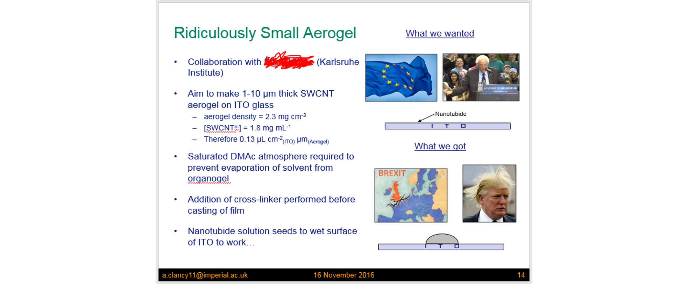
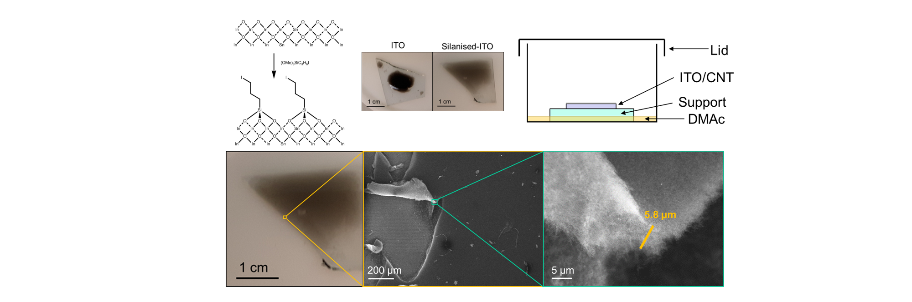
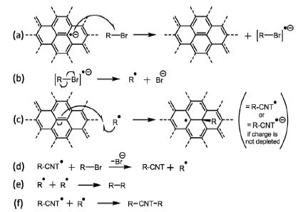

Inspired by my friend and collaborator Andrea Vezzoli's Website, here we give the history, background, and challenges behind our papers as they come out. The work is always more than the manuscript.
Behind the Papers

Exploring the Chemistry of 1D and 2D Nanomaterials
Inspired by my friend and collaborator Andrea Vezzoli's Website, here we give the history, background, and challenges behind our papers as they come out. The work is always more than the manuscript.
The story of this Nanoscale paper is kind of one of failure. I was so convinced I had the perfect plan to show things worked as I had hoped, but it want to be. It is also the story of a hardworking MSc student (Qili Liu) and an absolute gem of a PhD student (Rebecca Shutt).
Since 2019, we have known you can make phosphorene nanoribbons (PNRs) from black phosphorus (bP) in what is ultimately a pretty simple 2-step process:
Science can take a really long time. The background to this paper isn’t the longest (I’m currently writing a paper based on data a collaborator took in 2009 and then forgot about), but it has been a long while. My contribution to this paper was mainly in November 2016 to be precise, about 6 years before submission. During my time at Imperial under Milo Shaffer, I had been roped into a collaboration with KIT where they wanted to make nanotube films infiltrated with a molecule for solar cell applications. The film was to be evenly a few nanometres thick, homogenous, and on ITO glass, which was a challenge. My approach was to make a thin aerogel, which could be infiltrated, then squished flat to give the desired film. The aerogel chemistry had been established previously by Martina De Marco, where you mix concentrated sodium nanotubide with di-iodobenzene in DMAc (i.e my favourite solvent) and leave for a day to make an organogel, which can be solvent exchanged and freeze-dried to give the aerogel. These were typically a few cm wide and freestanding however and I needed a few microns on glass. My first attempts to just make the gel-forming mixture on the glass failed however, as it didn’t wet onto the glass and it just made a blob-like droplet. It had failed 1 second in. This was all recorded in my group meeting slides where I compared my failure to Trump and Brexit… not that the next 6 years would make for better news.

My solution was to silanise the glass with (OMe)3Si(C3H6)I which reacted with the ITO to give dangling iodoalkanes on the surface which would react to the nanotubide and make the surface more DMAc friendly. Now it wet beautifully - so it was solved, right? Well, no. Unfortunately to get the right thickness aerogel, I needed to add just 1.3 μL of gel-forming liquid per 1 cm2 of ITO slide and it dried after a minute or so, before the reaction completed, with drying effects destroying what little structure and porosity I had: there’s a reason you freeze-dry/supercritically-dry aerogels and not just dry-dry them. So how to stop it drying out? Cooling it would slow the drying but not stop the tiny amount leaving over 24h, so instead I exploited vapour pressure. If you saturate the atmosphere around the gel, then it will condense at the same rate it evaporates, so it wont dry out! After the reaction, I supercritically dried it with CO2, and voila! We had a 5.8 μm thick aerogel!

So did the project work? Well, no. I can’t really even remember why. In all this mentioned above was a solid week of work, but I never worked on it again. However, we did have a promising new PhD student coming through called Dave Stringer, who was working to try and make gas sensors from carbon nanotubes. He was also using aerogels but instead of having benzene as the linker, he wanted to go more exotic and make things which would interact with molecules. See, nanotube sensors have long been a thing, but firstly their surface area is a bit rubbish (when not in aerogel form), and secondly, they aren’t very adaptable. By tweaking the chemistry of the CNT aerogel linker, his aim was to try and provide additional control over sensitivity, e.g. with amines that usually N-dope nanotubes reacting with acids to form nitrogen cations which wouldn’t. Change the doping and you (in theory) change the conductivity and hey presto you have sensing. I never got to see if this worked however, as a few months later I abandoned Imperial in favour of UCL. I still saw Stringer about (i.e. at the pub) and would happily chat about the nuances of playing with nanotubide, but it very much wasn’t my project. In the intervening years, the now-doctor Stringer was doing plenty of wonderful work in developing and improving these sensors and I won’t take any credit for all his endeavours. However, in 2022 I was sent a draft of a paper on aerogels and lo and behold, while the sensor work was more than I would have dreamed, underpinning it was two key tricks. 1) the substrate should be silanised with an alkyl iodide, and 2) it should be gelled in a saturated atmosphere of DMAc. No improving on perfection, I guess.
Not a contemporary paper, but one harkening back to my PhD Plus (since rebranded the EPSRC Doctoral Prize Fellowship). Having submitted my proposal in August, I was told in November 2015 was being given a year’s worth of funding, to start in January 2016. I was overjoyed. The idea was simple: to apply the chemistries I knew and loved for carbon nanotubes to WS2 and BN nanotubes. Then it all fell apart. Firstly the company who made WS2 nanotubes emailed me saying they were now a company who previously made WS2 nanotubes, while a few weeks later, a group from Canada emphatically proved that the BNNT work was a good idea by doing it and publishing in ACS Nano.
Luckily, all this really meant was I had a year of funding to do something else, and I had an axe to grind with a very minor issue with something generally accepted in my field. See, to functionalise nanotubes, we negatively charge them, e.g. using sodium naphthalide, to give anions of nanotubide, dissolve them in a solvent, then add an alkyl halide, RX. A mechanism for this reaction was proposed years ago by Voiry: a scientist I have never met, with a fantastic portfolio of great work. The mechanism was a throwaway suggestion in his paper, but was broadly accepted to my bewilderment as it just didn’t reflect reality.
